第 19 章：分布式消息队列
原章节：Distributed Message Queue · 原项目路径
19. Distributed Message Queue/
本章导读
这一章我们要从零设计一个分布式消息队列（Distributed Message Queue），而且要求比传统消息队列更苛刻：消息要能重复消费、要保证顺序、要保留两周。这三条「额外要求」正是整章的难点——传统消息队列（比如早期的 ActiveMQ）一条都不支持，因为支持它们会显著抬高设计复杂度。
学完这一章，你应该能解释：为什么 Kafka 用机械硬盘还能这么快？为什么设了 acks=all 仍可能丢数据？为什么「恰好一次投递」是个需要小心对待的词？
你将学到
- 点对点（Point-to-Point）与发布订阅（Pub-Sub）两种模型的区别，以及消息队列的四个核心价值
- 主题（Topic）、分区（Partition）、偏移量（Offset）、消费者组（Consumer Group）之间的关系
- Kafka 高性能的存储根基：分段日志（Segment Log）、稀疏索引、零拷贝（Zero-Copy）
- 生产者路由层放在哪里、消费者该用推模式还是拉模式
- 消费者再均衡（Rebalance）的代价，以及协作式再均衡的改进
- 副本（Replica）、ISR（In-Sync Replicas）与
acks如何共同决定「会不会丢数据」 - 三种投递语义（at-most-once / at-least-once / exactly-once）的准确边界
- 从 ZooKeeper 到 KRaft：Kafka 的元数据管理为什么必须换掉 ZooKeeper
1. 为什么需要消息队列
用户上传一张图片，后端要做四件事：压缩、生成缩略图、写数据库、发通知。全部同步执行，用户要盯着转圈等好几秒——而「发通知」失败根本不该影响上传成功。把这几件事丢进消息队列，用户立刻收到「上传成功」，剩下的后台慢慢做。这就是消息队列的四个价值：
- 解耦（Decoupling）：生产者不需要知道消费者是谁、有几个、在不在线，上下游可以独立修改和发布。
- 提升可扩展性（Scalability）：生产端和消费端按各自流量独立扩容，高峰时积压消息、多开消费者追上去。
- 提升可用性（Availability）：系统某一部分挂了，其他部分仍可继续和队列交互。
- 更好的性能（Performance）：生产者发出消息后不等消费者确认就返回。
主流实现有 Kafka、RabbitMQ、RocketMQ、Apache Pulsar、ActiveMQ、ZeroMQ。
值得主动提的细节：严格来说 Kafka 和 Pulsar 不是「消息队列」，而是事件流平台（Event Streaming Platform）——传统消息队列在消息被消费后就删除消息，流平台把消息当作可重放的日志长期保留。本章要设计的正是后者。
2. 需求澄清与设计范围
面试里最忌讳听到题目就开始画架构。下面是原文的对话，我补上了「为什么问这个」：
| 提问 | 回答 | 为什么重要 |
|---|---|---|
| 消息格式和平均大小？ | 纯文本，通常几 KB | 决定存储结构和网络协议 |
| 消息可以被重复消费吗？ | 可以，不同消费者都要能重复消费 | 额外要求，传统队列不支持 |
| 消息顺序要保证吗？ | 要保证 | 额外要求，会限制并行度 |
| 数据保留多久？ | 两周 | 额外要求，决定存储成本模型 |
| 要支持多少生产者/消费者？ | 越多越好 | 决定扩展性设计目标 |
| 投递语义要支持哪些？ | 至少 at-least-once，最好三种都可配置 | 决定生产者/消费者的确认逻辑 |
| 端到端延迟目标？ | 日志聚合要高吞吐，传统场景要低延迟 | 决定批处理（Batching）策略 |
功能需求：生产者发消息到队列；消费者从队列消费；消息可被消费一次或重复消费；历史数据可按保留期截断；消息大小在 KB 量级；顺序需保证；投递语义可配置为 at-most-once / at-least-once / exactly-once。
非功能需求：按场景可配置的高吞吐或低延迟；可扩展（能扛突发流量）；持久化与可靠（数据落盘并在节点间复制）。
记住这句话：传统消息队列之所以简单，是因为它不支持数据保留、不保证顺序。一旦加上这两条，整个设计就变了——你要在磁盘上维护一份可随机读取、有序、多副本的日志。
3. 高层架构与两种消息模型

生产者（Producer）把消息发送到队列；消费者（Consumer）订阅队列并消费订阅到的消息；消息队列是中间的服务，把双方解耦、让它们独立扩展；生产者和消费者都是客户端，消息队列是服务端。
点对点模型（Point-to-Point），传统消息队列常用：
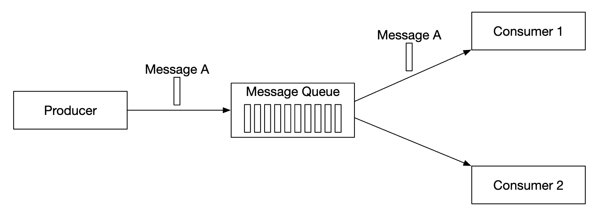
一条消息被发送到队列，只被一个消费者消费；可以存在多个消费者，但一条消息只被消费一次；消息被确认（Ack）消费后即从队列删除；点对点模型没有数据保留——但我们的设计里有。
发布订阅模型（Publish-Subscribe），事件流平台常用：
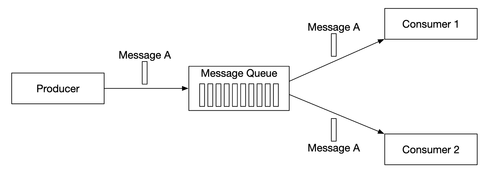
消息关联到一个主题（Topic）；消费者订阅主题后，会收到发送到该主题的全部消息。

| 组件 | 职责 |
|---|---|
| 客户端（Clients） | 生产者把消息推到指定主题；消费者组订阅主题的消息 |
| Broker（代理节点） | 持有多个分区，一个分区保存某个主题的一个子集消息 |
| 数据存储（Data Storage） | 在分区中存储消息 |
| 状态存储（State Storage） | 保存消费者状态（消费到哪了） |
| 元数据存储（Metadata Storage） | 保存配置和主题属性 |
| 协调服务（Coordination Service） | 服务发现（哪些 Broker 还活着）和选主（哪个 Broker 是 Leader） |
4. 主题、分区与偏移量
一个主题的数据量可能非常大，怎么扩展？答案是把主题拆成分区（Partition），也就是分片（Sharding）。
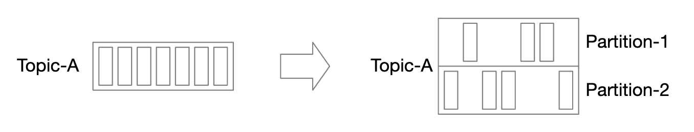
- 发往某个主题的消息均匀分布到它的各个分区；承载分区的服务器叫 Broker；
- 每个分区内部就是一个 FIFO 队列，消息顺序在分区内被保证；
- 消息在分区内的位置叫偏移量（Offset），就是从 0 开始递增的整数，可以理解为「第几条」；
- 每条消息只被发送到一个特定分区，分区键（Partition Key） 决定它落到哪。用
user_id当分区键，就能保证同一个用户的消息顺序不乱； - 每个消费者订阅一个或多个分区；多个消费者消费同一批消息时，组成消费者组（Consumer Group）。
初学者最容易误解的点
Kafka 只保证单个分区内有序，不保证跨分区有序。业务要求全局严格有序时，唯一的办法是把主题设成单分区——代价是放弃并行消费，吞吐被锁死在单分区上限。
更现实的做法是把「需要保序的维度」做成分区键。订单场景用
order_id做分区键，同一笔订单的所有事件必然落在同一分区，顺序自然就对了。绝大多数业务需要的是「局部有序」，不是「全局有序」。
5. 消费者组

- 消息按消费者组复制，不是按消费者。组 A 和组 B 各自收到完整一份消息，但组内成员之间是分摊关系；
- 每个消费者组维护自己的一份偏移量，互不干扰；
- 组内并行读取能提高吞吐，但会破坏顺序保证；
- 解决办法：同一个分区在同一个组内只能被一个消费者订阅；
- 由此推出：组内消费者数量不能超过分区数，多出来的消费者分不到分区，白白空转。
实践提醒：开了 3 分区的主题却起 10 个消费者实例——只有 3 个在工作。反过来，消费者数已经是分区数两倍还没吃满 CPU，那不是加消费者能解决的，得先加分区。
6. 数据存储：分段日志（Segment Log）
先看消息数据的特点：写多读也多；没有更新和删除操作（消息只是到期被整体截断）；访问模式几乎全是顺序读写。
候选方案中，通用数据库不理想——典型关系型数据库很难同时扛住写密集和读密集两种负载；预写日志（Write-Ahead Log, WAL） 是一个只支持追加（Append）的文件，对机械硬盘极其友好，这就是我们选的方案。具体做法：把分区拆成多个分段（Segment），避免维护无限增长的巨型文件；老分段只读，新写入只被最新的活跃分段（Active Segment） 接收。
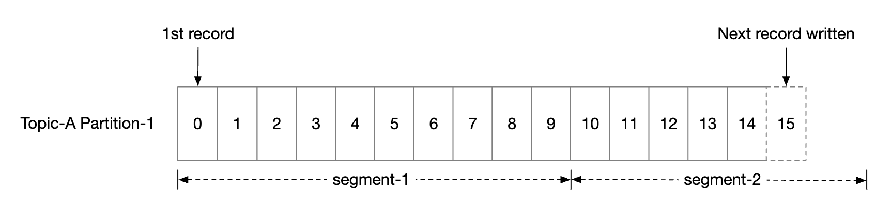
原文还纠正了一个偏见：「机械硬盘很慢」高度依赖访问模式。顺序访问时（我们的场景）机械硬盘能跑出不错的读写速度；而且操作系统的页缓存（Page Cache） 会激进地把磁盘数据缓存到内存里进一步加速。
原文这里说对了一半，但数字严重过时
「HDD 顺序访问不慢」是对的，但「几 MB/s」是二十多年前的水平。现代 7200 RPM 机械硬盘的顺序读写吞吐在 150 ~ 250 MB/s 量级，顺序访问几乎就是它的理论峰值。原文把优势说得太小了，反而让人以为 HDD 只能勉强够用。
真正要理解的是为什么顺序访问快：机械硬盘的瓶颈是磁头寻道和旋转延迟，随机读写每次都要等磁头挪位置（毫秒级）；顺序读写时磁头几乎不用挪，吞吐完全取决于盘片转速和数据密度。这就是「用追加日志替代随机更新」的全部理由。
原笔记缺失：Kafka 存储的三个关键机制
① 分段 + 稀疏索引（Sparse Index）。每个分段不只是数据文件，还配了索引：
| 文件 | 作用 |
|---|---|
*.log |
消息数据本体，按 offset 顺序追加 |
*.index |
偏移量索引，稀疏存储：每写入约 4KB 数据（index.interval.bytes）记一条索引项，内容是「相对 offset → 物理文件位置」 |
*.timeindex |
时间戳索引，支持按时间查找消息 |
Kafka 默认每个分段最大 1GB（log.segment.bytes）。为什么索引要「稀疏」？如果每条消息都建索引，索引本身就和数据一样大，每次写入都要维护它。稀疏索引的查询方式是二分查找定位 + 顺序扫描：先在索引里二分找到「不大于目标 offset 的最近一条索引项」，拿到物理位置，再顺序扫几十条消息即可。
② 零拷贝（Zero-Copy）。传统的一次「从磁盘读文件发给网络」要经历 4 次数据拷贝和 4 次用户态/内核态切换：
磁盘 → 内核页缓存 → 用户态缓冲区 → Socket 缓冲区 → 网卡
Kafka 用 sendfile 系统调用（Java 侧是 FileChannel.transferTo），让数据不经过用户态：
磁盘 → 内核页缓存 ────────────────→ 网卡
拷贝次数从 4 次降到 2 次，上下文切换从 4 次降到 2 次，在「大块顺序读」场景下收益非常明显。
③ 页缓存 + 顺序追加。Kafka 自己不维护消息的内存缓存，完全依赖操作系统的页缓存——JVM 堆里不存大量数据，避免了 GC 停顿，重启后页缓存可能还是热的。
一个可以自己推出的结论：顺序追加写 + 稀疏索引 + 零拷贝叠加起来，Kafka 的吞吐瓶颈不在磁盘 IO，而在网络带宽和副本同步。所以它敢用普通机械硬盘——把磁盘的强项用到极致，把弱项（随机读写）从设计里彻底消除。
7. 消息的数据结构
生产者、队列、消费者三方的消息结构必须完全一致，才能避免序列化/反序列化的额外拷贝。
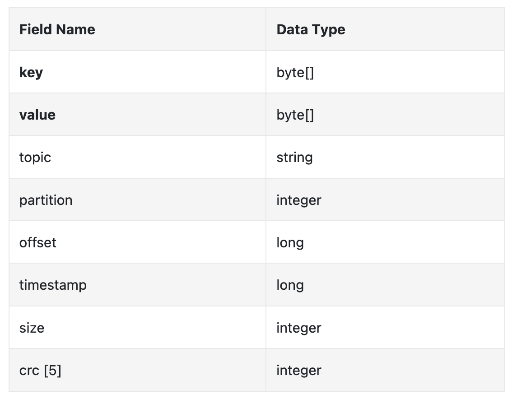
- Key：决定消息属于哪个分区，默认映射是
hash(key) % numPartitions。生产者也可以覆盖默认行为，自己指定分区。 - Value：消息负载（Payload），可以是明文或压缩后的二进制块。
注意：消息 Key 和传统 KV 存储的 Key 不同，不需要唯一，甚至可以为空。它只负责「决定分区」，不负责「唯一标识」。
| 字段 | 含义 |
|---|---|
| Topic / Partition | 消息所属的主题与分区 ID |
| Offset | 消息在分区内的位置。topic + partition + offset 可唯一定位一条消息 |
| Timestamp / Size | 消息的存储时间与大小 |
| CRC | 校验和，保证消息完整性 |
要支持更多能力（比如消息过滤），在结构里增加字段即可。
8. 批量（Batching）：吞吐与延迟的权衡
批处理是这套系统性能的命脉，我们在生产者、消费者、消息队列三处都使用它。原因：让操作系统能把消息成组发送，摊销昂贵的网络往返成本；消息成组顺序写入 WAL，产生大量顺序写，进一步吃到页缓存收益。
代价是延迟与吞吐的取舍：批量越大吞吐越高但延迟越高（要攒够一批才发）；批量越小吞吐越低但延迟越低。
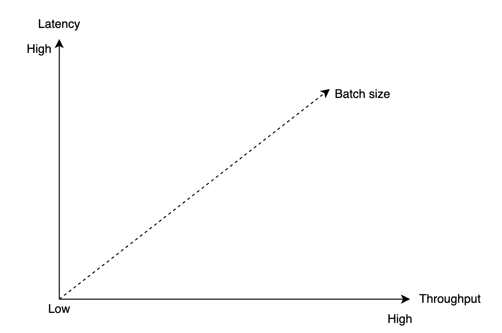
所以系统是可调的：需要低延迟就把批量调小；目标是吞吐（比如日志聚合）就把批量调大，同时可能要增加分区数来补偿单分区顺序写的吞吐上限。
9. 生产者流程：路由层放在哪里
生产者要把消息发给某个分区，该连哪个 Broker？
方案一：独立的 routing layer（路由层）
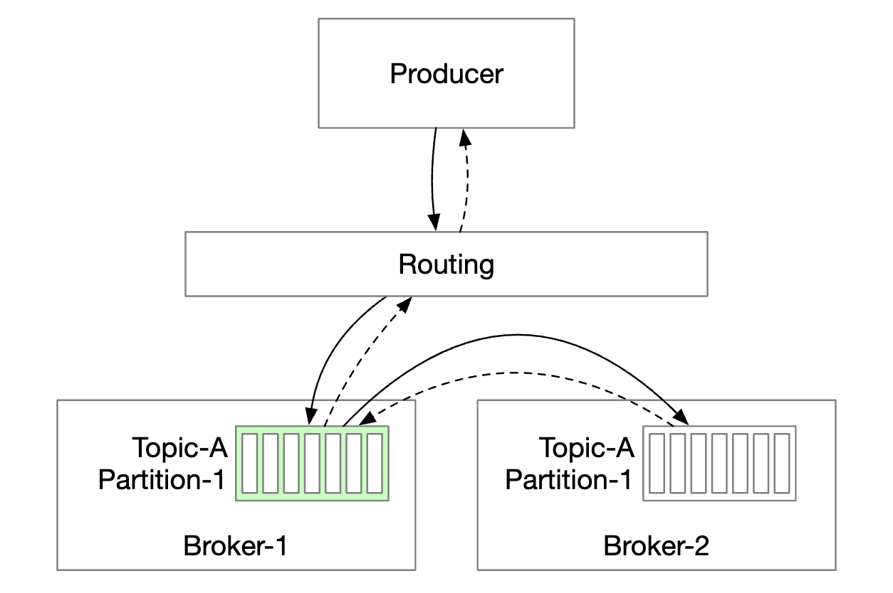
路由层从元数据存储读取副本分配方案（Replication Plan）并缓存在本地；生产者把消息发给路由层；路由层转发给该分区的 Leader；从副本（Follower）从 Leader 拉取新消息，收到足够确认后 Leader 提交数据并回复生产者。副本存在的理由就是容错（Fault Tolerance）。
这个方案有两个缺点：多一个组件就多一跳网络往返；而且没法做批量——路由层是转发，很难把多个生产者的消息攒成一批。
方案二：把路由层嵌进生产者（Kafka 的实际做法）

少一跳网络、延迟更低；生产者自己控制消息路由到哪个分区；生产者内部的缓冲区（Buffer） 让它能先在内存攒一批再一次请求发出，吞吐大幅提升。这就是上一节吞吐/延迟权衡的工程落地。
10. 消费者流程：推模式还是拉模式
消费者指定分区里的某个偏移量，从那里开始接收一批消息。

推模式（Push）：Broker 一收到消息就推给消费者。优点是延迟低；缺点是消费速度跟不上生产速度时消费者会被压垮，而且不同消费者处理能力不同，由 Broker 统一控速很难照顾所有人。
拉模式（Pull）：消费者主动去 Broker 拉。优点是消费速率由消费者自己掌控——消费慢就不会被压垮，可以慢慢扩容追上去；更适合批量处理，因为消费者可以激进地一次拉一大批（推模式下 Broker 根本不知道消费者能吃多少）。缺点是延迟更高，且没有新消息时会产生大量空转请求——后者用长轮询（Long Polling） 缓解：请求先挂住，有新消息或超时才返回。
因此绝大多数消息队列（包括我们的设计）选择拉模式。
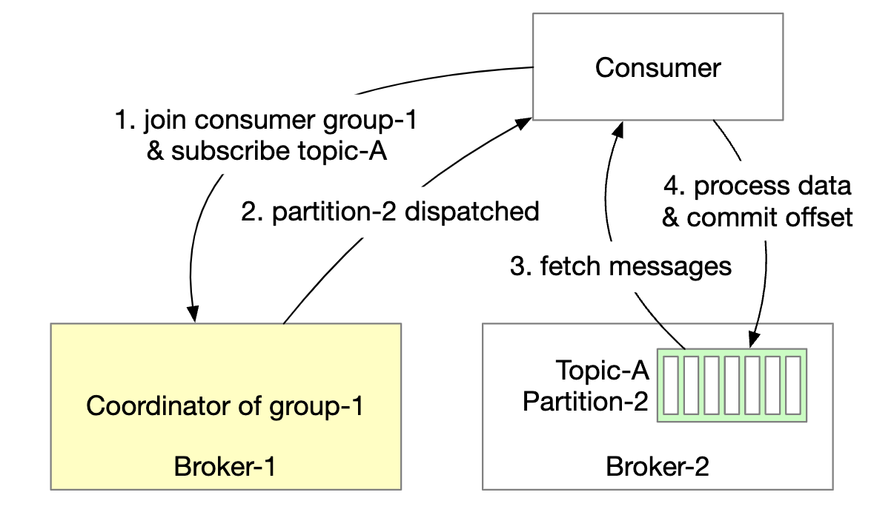
- 新消费者订阅主题 A，加入组 1；
- 通过对组名做哈希找到正确的 Broker——同一个组的所有消费者都连到同一个节点，这个节点叫组协调者（Group Coordinator）；
- 协调者确认消费者已加入组，把分区 2 分配给它；分区分配策略有轮询（Round-Robin）、范围（Range）等；
- 消费者从上次的偏移量开始拉取，偏移量由状态存储保存；
- 消费者处理完消息，把偏移量提交（Commit）给 Broker。
注意第 5 步的顺序：先处理后提交，还是先提交后处理？这个顺序直接决定投递语义——见第 16 节。
11. 消费者再均衡（Rebalance）
再均衡解决的问题是：哪个消费者负责哪些分区。触发条件：消费者加入或离开；分区新增或移除；消费者长时间不发心跳。Broker 作为协调者（Coordinator） 在整个流程中起核心作用。
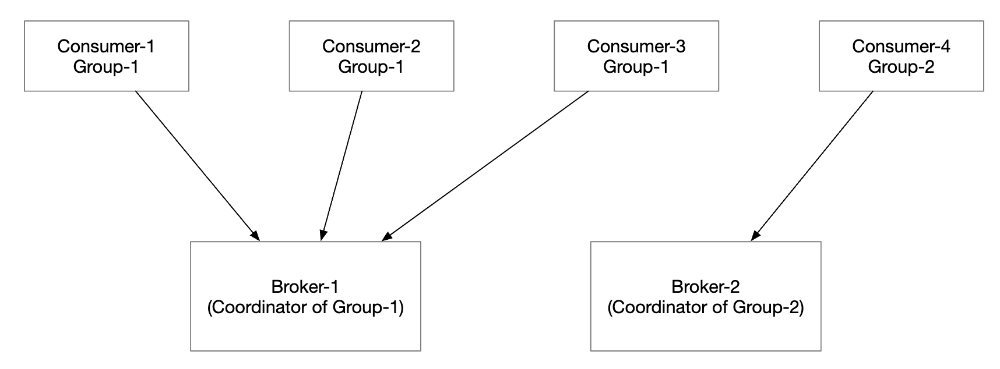
同组所有消费者都连到同一个协调者（通过组名哈希找到）；消费者列表变化时，协调者选出这个组的组长（Leader）；组长计算新的分区分配方案，上报协调者，协调者再广播给其他消费者。

场景一：消费者加入组

最初只有消费者 A，它消费所有分区；消费者 B 请求加入组；协调者通过心跳响应被动地通知所有成员该再均衡了；所有消费者重新加入组后，协调者选出组长并通知选举结果；组长生成分区分配方案发给协调者，其他成员等待方案；消费者开始从新分配到的分区消费。
场景二：消费者离开组

A 和 B 在同一组；B 请求离开；协调者收到 A 的心跳后通知它该再均衡了；后续步骤相同。
场景三：消费者长时间不发心跳

协调者认定该消费者已死，把它负责的分区重新分配。
原笔记缺失：再均衡的三个真实代价
原文把再均衡描述成中性的「流程」，但工程上它是个需要警惕的痛点：
- 全局停顿（Stop-The-World）：在「急切式再均衡（Eager Rebalancing）」下，所有消费者必须先放弃全部已分配分区再重新分配，整个组会有一段时间完全停止消费。
- 重复消费：因为必须放弃分区，消费者会把进度提交（或回退），重新拿到分区后可能重复消费一部分消息。很多系统的「至少一次」语义就是在再均衡时突然暴露出来的。
- 再均衡风暴：消费者因处理超时错过心跳被踢出组，回来后再次触发再均衡，再次超时……整个组永远无法稳定。
改进方案：协作式再均衡（Cooperative Sticky，Kafka 2.4+）——不再「先全部放弃再分配」，而是只回收需要移动的分区，消费者可以继续消费自己保留的分区；一次再均衡可能需要两轮协议，但绝大多数消费者全程无感。配合静态成员资格（Static Membership），给消费者一个固定的 group.instance.id，短暂重启（比如滚动发布）时不会被踢出组，可以直接拿回原分区——这是消除再均衡风暴最有效的手段。
12. 状态存储与元数据存储
状态存储保存分区与消费者的映射关系，以及每个分区最后被消费到的偏移量。
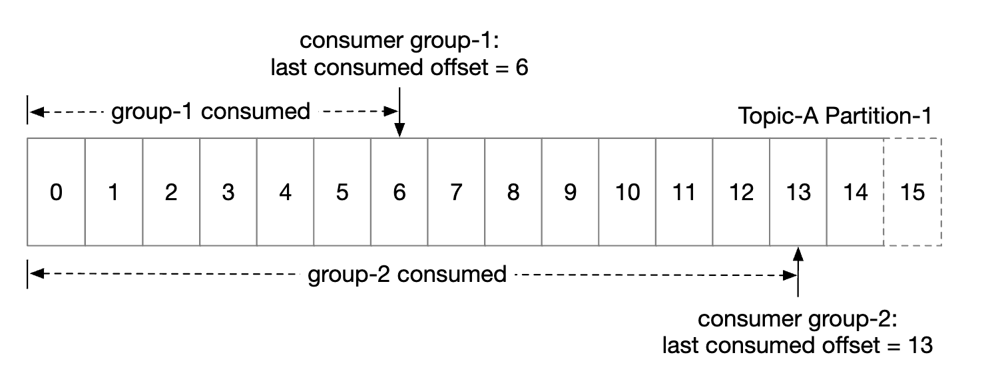
上图里组 1 的偏移量停在 6，表示之前的消息都消费完了。如果消费者崩溃，新接手的消费者会从这个位置继续。消费者状态的特征是：读写频繁但数据量很小；频繁更新但极少删除；随机读写；一致性很重要（写错会导致重复消费或漏消费）。
元数据存储保存配置和主题属性：分区数量、保留期、副本分配方案等。元数据变化不频繁、数据量小，但对一致性要求很高。
原笔记在这里的结论是错的，而且是本章最重要的一条勘误。
原文说：「Given these requirements, a fast KV storage like Zookeeper is ideal.」（消费者状态适合放在 ZooKeeper 这种快速 KV 存储里）
这是过时且不准确的说法。 Kafka 在 0.9 版本（2015 年） 就把消费者偏移量从 ZooKeeper 迁移到了自己的内部主题
__consumer_offsets（见 KIP-31 / KIP-62）。原因很直接：ZooKeeper 把每次写都当成一次共识操作，根本扛不住消费者提交偏移量这种高频小写入。消费者一多，ZooKeeper 就成了整个集群的瓶颈。正确做法：偏移量存在 Kafka 内部的
__consumer_offsets主题里，该主题使用日志压缩（Log Compaction） 而非按时间删除——同一个(group, topic, partition)的偏移量只保留最新值，旧值被压实掉，磁盘占用很小。详见文末【勘误与补充】。
13. 协调服务：ZooKeeper 时代的经典设计
本节必须先读这段提示
下面的内容是 ZooKeeper 时代的经典设计。它在 2011 到 2022 年间是 Kafka 的标准架构，理解它对面试依然有价值（面试官很可能会问「ZooKeeper 在 Kafka 里干什么」）。但请记住：现代实现已经演进了。Kafka 从 2.8 开始引入 KRaft 模式，3.3 起达到生产可用，并在 4.0 版本彻底移除了 ZooKeeper 依赖。
原文认为 ZooKeeper 是构建分布式消息队列的必需品。它是一个层级式键值存储（Hierarchical Key-Value Store），常用于分布式配置、同步服务和命名注册（也就是服务发现）。
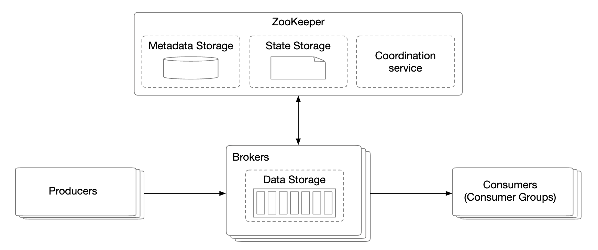
引入 ZooKeeper 后，Broker 只需维护消息数据本身，元数据和状态存储都交给它。此外 ZooKeeper 还负责 Broker 副本的选主（Leader Election）。
KRaft：为什么必须换掉 ZooKeeper
ZooKeeper 不是「有点旧」，而是有三个结构性问题：
- 运维复杂度翻倍。你要维护两套分布式系统：Kafka 集群和 ZooKeeper 集群，各有各的部署方式、监控指标、升级路径、安全配置（TLS、SASL），而且必须协调升级——版本不兼容会导致整个 Kafka 集群无法启动。
- Controller 故障恢复慢。Kafka 的 Controller 是一个被选出来的 Broker，负责管理分区 Leader 分配和副本状态。ZooKeeper 模式下 Controller 的元数据不在自己手里——必须从 ZooKeeper 全量加载，集群越大加载越慢。Controller 一挂，新 Controller 重新选举 + 重新加载元数据，可能让集群在秒级到分钟级的时间里无法响应元数据变更。
- 元数据规模有上限。ZooKeeper 把所有元数据放在内存，每次变更都要走共识协议。实践表明，ZooKeeper 模式的 Kafka 集群在分区数达到几十万量级时就会遇到明显瓶颈。
KRaft（Kafka Raft） 的核心思路是：把元数据本身也当成一条日志。集群里有一组专门的 Controller 节点，组成一个 Raft 共识组；所有元数据变更（建主题、改分区、Leader 切换）都作为记录追加到这条元数据日志；Raft 保证这条日志在 Controller 之间强一致地复制；Broker 不再被动等推送，而是主动订阅这条日志，像消费普通主题一样拉取元数据更新。
Raft 在这里扮演什么角色？ 它就是那个「让一组机器对同一份日志的顺序达成一致」的算法，把 ZooKeeper 原先承担的共识职责，用一个内嵌在 Kafka 进程里的协议替代掉了。Raft 的核心机制是：Leader 接收写入并复制给 Follower，只要多数派（Quorum） 确认落盘，这条记录就被认为已提交；Leader 挂了，拥有最新日志的节点会被选为新 Leader。
| 维度 | ZooKeeper 模式 | KRaft 模式 |
|---|---|---|
| 需要维护的系统 | Kafka + ZooKeeper 两套 | 只有 Kafka 一套 |
| Controller 故障恢复 | 从 ZK 全量加载元数据，秒级到分钟级 | 备用 Controller 已持有元数据日志，亚秒到秒级切换 |
| 元数据规模 | 几十万分区量级遇到瓶颈 | 目标支撑百万级分区 |
| 元数据传播 | Controller 推送给 Broker，可能滞后 | Broker 主动拉取日志，天然有序、可断点续传 |
面试怎么答：如果面试官问「Kafka 为什么需要 ZooKeeper」，标准答案是——以前需要，它承担元数据存储、Controller 选主、集群成员管理；现在不需要了，KRaft 用一条 Raft 复制的元数据日志替代了它。动机是降低运维复杂度、加快 Controller 故障恢复、突破元数据规模上限。
顺带一提：Pulsar 走的是另一条路——把存储层完全外置给 Apache BookKeeper，Broker 本身无状态。这是「计算存储分离」的思路，和 KRaft 是两种不同的解法。
14. 复制与 ISR：acks 如何决定持久性

每个分区被复制到多个 Broker，但只有一个 Leader 副本；生产者把消息发给 Leader；Follower 从 Leader 拉取消息复制；足够多的副本同步完成后，Leader 向生产者返回确认（Acknowledgment）；每个分区的副本分布叫副本分配方案（Replica Distribution Plan）。
勘误提醒：原文说「某个分区的 Leader 创建副本分配方案并存到 ZooKeeper」。这个说法不准确——副本分配是 Controller 的职责。分区 Leader 只负责数据复制和读写，不决定副本放哪里。
ISR（In-Sync Replicas，同步副本）就是与 Leader 保持同步的副本集合。

上图：已提交的偏移量（Committed Offset）是 13；又有两条新消息写入 Leader 但还没提交；一条消息只有在 ISR 中所有副本都同步之后，才算「已提交」；副本 2 和 3 完全跟上 Leader，在 ISR 里；副本 4 落后了，暂时被移出 ISR。
注意措辞：「移出 ISR」不是永久的。副本 4 一旦追上 Leader 进度，会重新加入 ISR。ISR 是动态集合，不是静态配置。
ISR 体现了性能与持久性的取舍：要求一条都不丢，就得等所有副本同步完才确认——但一个慢副本会让整个分区变得不可用；容忍丢一点数据，就可以只等一部分副本。
acks=all（等价于 acks=-1）：ISR 中所有副本都必须同步这条消息。发送慢，持久性最高。
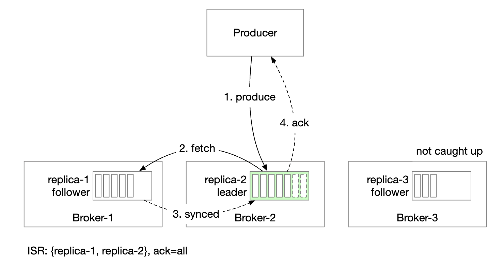
acks=1：Leader 收到就返回确认。发送快，持久性低——Leader 在 Follower 复制之前崩溃，这条消息就丢了。

acks=0：生产者发出去就不管了。最快，持久性最低——消息可能连 Broker 都没到，生产者却以为成功了。

原笔记缺失：acks 单独决定不了任何事
初学者常以为「设了 acks=all 就不会丢数据」——错。真正决定持久性的是三个参数的组合：
| 参数 | 作用 |
|---|---|
acks |
生产者等几个副本确认才认为写成功 |
replication.factor（RF） |
每个分区总共存几份副本 |
min.insync.replicas（min ISR） |
至少要有几个副本在 ISR 里，才允许写入 |
关键逻辑是：当 ISR 大小小于 min.insync.replicas 时，Broker 会拒绝写入，生产者收到 NotEnoughReplicasException。这是「宁可不可写，也不丢数据」的保护。
一个经典的生产配置是 RF=3 + min.insync.replicas=2 + acks=all：容忍 1 台 Broker 挂掉而集群仍然可写（ISR 还剩 2 个）；已提交的消息不会丢（每条消息至少落在 2 台机器上）；同时挂掉 2 台则写入被拒绝——这看起来是「降低可用性」，实际是主动选择一致性：宁可让生产者收到错误（它可以重试或告警），也不要悄悄丢掉已经承诺过的消息。
还有一个必须知道的参数：unclean.leader.election.enable。默认 false（Kafka 3.0 起），只有 ISR 中的副本才能被选为 Leader，代价是 ISR 全部挂掉时该分区彻底不可用；设为 true 则允许非 ISR 副本当 Leader，收益是可用性提高，代价是会丢数据。
一句话总结：
acks管「生产者等多久」，min.insync.replicas管「什么时候干脆不写」，unclean.leader.election.enable管「实在没办法时保数据还是保可用」。三者合起来才是一份完整的持久性策略。
消费者侧的读
让所有消费者都连到分区的 Leader 上读消息：设计最简单、运维最容易；一个分区内的消息只会被组内的一个消费者读取，连接数可控；热主题可以通过增加分区数和消费者数扩展；某些场景下可以让消费者从 ISR 中的其他副本读，比如消费者位于另一个数据中心时。ISR 列表由 Leader 维护，它跟踪自己和每个副本之间的落后程度。
15. 可扩展性：四个维度
生产者比消费者轻量得多，直接增减实例即可。消费者：消费者组之间互相隔离，可以随意增减消费者组，再均衡负责优雅地处理组内消费者的增减——再均衡机制同时提供了扩展性和容错性。
Broker：

一个 Broker 挂掉后，仍有足够的副本保证分区数据不丢；系统选举出新 Leader，Broker 协调者把故障 Broker 上的分区重新分配给现有的其他副本；这些副本接管新分区并作为 Follower 运行，直到追上 Leader 进度后加入 ISR。
让 Broker 更容错的三条建议：最小 ISR 数量是延迟与安全性的平衡点，可按需微调；不要把同一个分区的所有副本放在同一个节点，那是资源浪费也起不到容错作用；如果某个分区的所有副本全部崩溃，数据就永久丢失了——把副本分散到多个数据中心能缓解但会显著增加延迟，折中方案是用数据镜像（Data Mirroring） 在集群间异步同步。
新增 Broker 时，可以临时允许副本数超过配置值，直到新 Broker 追上进度，再删掉不再需要的副本。
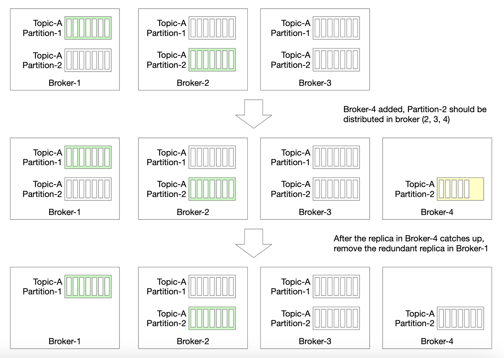
分区：新增分区时生产者会被通知，消费者再均衡被触发，数据存储上只把新消息写到新分区，不拷贝旧数据。
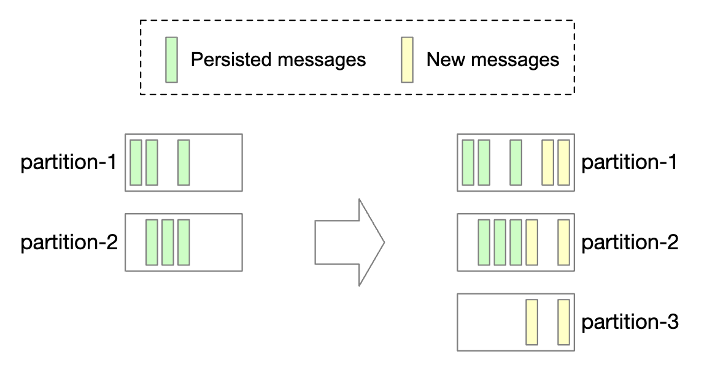
减少分区数要复杂得多：

分区一旦被下线，新消息只被剩余分区接收；但被下线的分区不会立即删除，因为里面还有消息可以被消费；等预先配置的保留期（Retention Period）过去后才截断数据、释放空间；过渡期内生产者只往活跃分区发消息，但消费者仍从所有分区读；保留期到期后对消费者做一次再均衡，把下线分区彻底移除。
16. 投递语义：三种保证的真实边界
At-Most-Once（至多一次）：消息最多被投递一次，也可能一次都没投到。

生产者异步发送消息，投递失败不重试；消费者拉到消息后立即提交偏移量，如果处理之前崩溃，这条消息就永远不会被处理。结论：会丢消息，但绝不重复。
At-Least-Once（至少一次）：消息可能被投递多次，但不应该有消息没被处理。
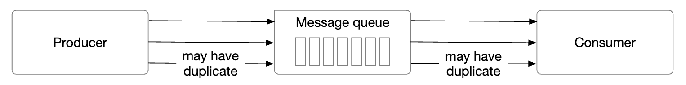
生产者用 acks=1 或 acks=all 发送，出问题就不断重试；消费者拉到消息后处理完成才提交偏移量。于是可能出现：消费者处理完了但还没提交就崩溃——重启后会再处理一次。结论：不丢消息，但可能重复。
Exactly Once（恰好一次）：对用户最友好，但实现代价极高。

原文这一节只有一句话，但它是初学者最容易被误导的概念，必须讲透。
第一件事：端到端的「恰好一次」不可能由消息队列单独实现。 因为「恰好一次」要约束的不是「消息被投递几次」，而是「业务副作用发生几次」。而副作用发生在消费者这一侧——可能是写数据库、扣款、调用外部 API，消息队列无法控制外部系统的操作是否被重复执行。只要消费者在「处理完成」和「提交偏移量」之间崩溃，队列就无法判断该不该重发。更本质的说法是：消息投递和业务处理是两个独立的状态变更，除非它们能放进同一个原子事务，否则无法做到恰好一次。
第二件事：Kafka 说的 "exactly-once semantics"（EOS）到底是什么？ 它指的是 Kafka 内部（从 Kafka 读到 Kafka 写）的恰好一次，由两个机制拼成：
机制 解决什么问题 怎么做到 幂等生产者（Idempotent Producer） 生产者重试导致的重复写入 每个生产者会话有生产者 ID（PID），每条消息带单调递增的序列号，Broker 按 (PID, 分区, 序列号)去重。开启方式：enable.idempotence=true事务（Transactions） 跨多分区写入 + 偏移量提交需要原子性 用 transactional.id标识事务，Broker 端维护事务状态；消费者用isolation.level=read_committed只读已提交数据两者合起来保证的是：「消费一个主题、处理后写回另一个主题」这个闭环在 Kafka 内部恰好执行一次，这也是流处理（Kafka Streams / Flink）最常用的模式。
第三件事：那跨系统怎么办？ 答案是消费端自己做幂等，这也是绝大多数生产系统的真实做法。常见手段：唯一键 + 数据库唯一索引（重复插入直接失败）；去重表（处理前查「这条处理过吗」，处理后写去重记录，注意这两步必须和业务操作在同一个数据库事务里）；UPSERT / 幂等写（把「加 1」改成「设为 5」）；状态机 + 版本号（旧版本操作直接丢弃）。
一句话总结：Kafka 的 EOS 是「幂等生产者 + 事务」在 Kafka 内部的语义。真正的端到端恰好一次 = 队列的 EOS + 消费端的幂等，业界更诚实的叫法是 effectively-once（效果上一次）。当有人跟你说「我们用消息队列实现了恰好一次」，你该追问的是：你的消费端怎么做幂等？
17. 高级特性
消息过滤（Message Filtering）：有些消费者只想消费分区里某一种类型的消息。一个办法是为每类消息建独立主题，但业务场景一多代价很高：同一条消息存在多个主题里是纯粹的存储浪费；生产者被紧耦合到消费者上——每来一个新消费需求，生产者就要改一次。
用消息过滤可以解决：在消费者侧过滤（最朴素的做法）会带来大量无意义的消费者流量；给消息打标签（Tag）、消费者声明订阅哪些标签是推荐做法；也可以通过消息负载（Payload） 过滤，但如果消息加密或序列化过，这既困难又不安全；对更复杂的过滤表达式，Broker 可以实现语法解析器或脚本执行器，但这会让消息队列变得很重。

延迟消息与定时消息：比如发起支付后 30 分钟再去检查这笔支付是否成功。核心思路是把消息分流——普通消息直接进分区，延迟消息先落到临时存储，到点再投递：
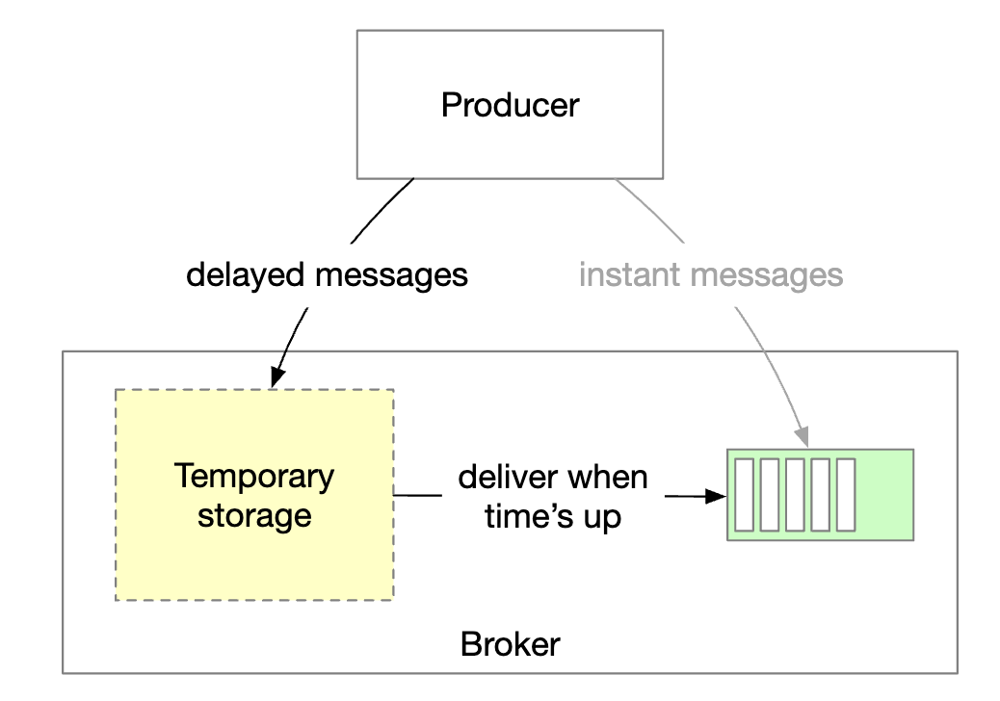
具体实现是先把消息放到 Broker 的临时存储，到时间了再挪到正式分区。
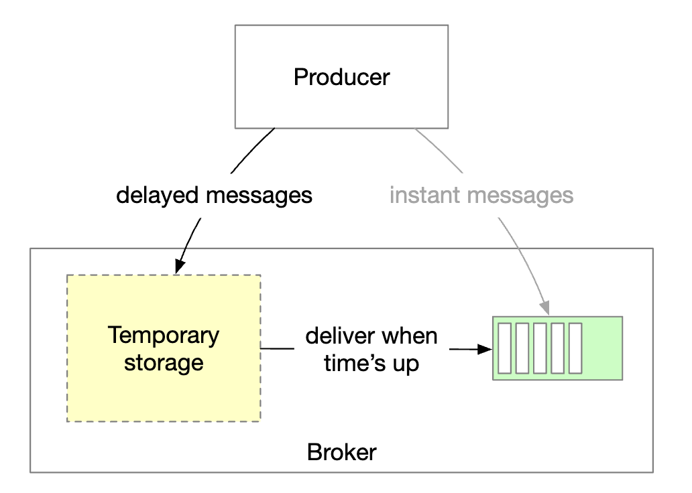
临时存储可以是一个或多个特殊的消息主题；定时功能可以用专门的延迟队列，或分层时间轮（Hierarchical Time Wheel） 实现——时间轮的思路类似钟表：细粒度的槽负责近期任务，粗粒度的槽负责远期任务，逐层降级，避免为每个延迟消息都维护一个定时器。
补充：主流消息队列对延迟消息的支持差别很大
产品 支持情况 RocketMQ 原生支持。早期只支持 18 个固定延迟等级；5.0 起支持任意精度的定时消息 Pulsar 原生支持，API 提供 deliverAfter（相对延迟）和deliverAt（绝对时间）RabbitMQ 需安装 rabbitmq_delayed_message_exchange插件，或用死信队列（DLX）+ TTL 组合实现Kafka 没有原生支持。变通做法是写到一个延迟主题，由定时消费者到点后转发到业务主题
18. 收尾：还有哪些可以聊
- 通信协议（Protocol of Communication）：需要考虑支持各种使用场景、支撑高数据量、验证消息完整性。流行协议有 AMQP 和 Kafka 协议。AMQP 是标准化消息协议，特性丰富（复杂路由、事务）但比较重；Kafka 协议是私有的二进制协议，为批量传输和高吞吐专门优化。
- 重试消费（Retry Consumption）：一条消息当前处理不了，可以送到专门的重试主题稍后再试。这比在消费者里阻塞重试好得多——阻塞会拖垮整个分区。生产上通常还配指数退避 + 死信队列（DLQ）。
- 历史数据归档（Historical Data Archive）：老消息可以备份到大容量廉价存储，比如 HDFS 或对象存储（如 S3）。这就是「冷热分层」，成本能降一个数量级。
勘误与补充
原文覆盖了消息队列的完整设计脉络，主体框架准确。但若干处存在技术事实错误与过时表述，另有一些现代工程必备的知识点缺失。
勘误 1：replica.lag.max.messages 已被移除十年
- 原文说法：用「副本落后多少条消息」判定它是否在 ISR 中。
- 问题：该参数在 Kafka 0.9.0.0（2015 年）就被移除。用消息条数衡量落后程度不合理：分区流量暴涨时，一个健康的副本可能几毫秒内就「落后 10000 条」，被误判踢出 ISR，随即又追回来——ISR 反复抖动，触发不必要的 Leader 选举。
- 正确说法：现代 Kafka 用
replica.lag.time.max.ms，基于时间判断：副本在窗口内（默认 30 秒）向 Leader 发起过拉取并跟上进度，即算在 ISR 内。 - 延伸：用「距离」还是用「时间」衡量同步状态，在不同负载下表现完全不同——时间窗口有界可预测，消息条数没有上界。
勘误 2：消费者偏移量不存在 ZooKeeper 里
- 原文说法：「a fast KV storage like Zookeeper is ideal」（消费者状态适合放在 ZooKeeper）。
- 问题：这曾是事实，但从 Kafka 0.9（2015 年）起不再成立。ZooKeeper 每次写都要走共识（Zab），而偏移量提交是高频小写入——消费者一多，ZK 立刻成为瓶颈。
- 正确说法：偏移量存储在 Kafka 内部主题
__consumer_offsets（KIP-31、KIP-62），使用日志压缩（Log Compaction）：相同(group, topic, partition)只保留最新值。 - 延伸：Delete（按时间/大小删除整段） 适合普通消息主题；Compact（保留每个 key 的最新值） 适合「状态」类主题（偏移量、CDC 日志）。理解这个区别，就明白 Kafka 为什么能同时扮演消息队列和分布式状态存储。
勘误 3：副本分配方案不是分区 Leader 决定的
- 原文说法：分区 Leader 创建副本分配方案并存入 ZooKeeper。
- 问题：职责搞混。分区 Leader 负责数据复制与读写服务；决定副本放在哪些 Broker 上的是 Controller。
- 正确说法：Controller 负责分区 Leader 选举与副本分配，ZK 模式下写入 ZK、KRaft 模式下写入元数据日志，其他 Broker 订阅获知变更。
- 延伸：这解释了 Controller 为什么是集群的单点关注对象——它挂了会触发重选，期间元数据变更暂停。KRaft 能缩短恢复时间，正是因为备用 Controller 已持有完整元数据日志。
勘误 4：HDD 顺序读写「几 MB/s」严重低估
- 原文说法：「HDDs can achieve several MB/s」。
- 问题：结论对，数字错得离谱。现代 7200 RPM 机械硬盘顺序读写吞吐在 150 ~ 250 MB/s 量级，是「几 MB/s」的几十倍。
- 正确说法：机械硬盘随机访问确实慢（IOPS 只有 100 ~ 200 量级），但顺序访问能接近盘片理论带宽。这正是「用追加日志替代随机更新」的全部理由。
- 延伸：SATA SSD 约 500 MB/s，NVMe SSD 可达数 GB/s。Kafka 用 HDD 能跑得很好，换 SSD 只会更好，瓶颈会先转移到网络和 CPU。
勘误 5：ACK=all 的写法与理解都要修正
- 原文说法：用
ACK=all/ACK=1/ACK=0，并把持久性完全归因于该参数。 - 问题：① 参数名错误——Kafka 的配置项是
acks（小写、复数），取值0/1/all（或-1）。② 理解不完整——acks只控制生产者等几个副本确认，管不了 ISR 还剩几个副本。 - 正确说法：持久性由
acks+replication.factor+min.insync.replicas共同决定；ISR 低于 min ISR 时 Broker 会拒绝写入。 - 延伸：还要知道
unclean.leader.election.enable（默认false）——ISR 全挂时要不要让落后副本当 Leader，这是可用性与一致性之间最赤裸的开关。
补充 1：KRaft 与 ZooKeeper 的演进（原笔记完全缺失）
原文把 ZooKeeper 说成「必需品」已经过时：Kafka 2.8 引入 KRaft，3.3 生产可用，4.0 已彻底移除 ZooKeeper 依赖。完整动机与机制见第 13 节。面试中如果你还在说「Kafka 用 ZooKeeper 存元数据」，会立刻暴露知识陈旧。
补充 2：分段日志、稀疏索引与零拷贝（原笔记只讲了一半）
原文讲了 WAL 和分段，漏掉了 Kafka 高性能的三个关键机制（见第 6 节）。这是回答「为什么 Kafka 用磁盘还这么快」的标准答案框架：顺序追加写 + 稀疏索引 + 零拷贝 + 页缓存。
补充 3：消息顺序性的真实边界
| 需求 | 能否满足 | 代价 |
|---|---|---|
| 分区内有序 | 可以，天然保证 | 无 |
同一业务键（如 order_id）有序 |
可以，用业务键做分区键 | 可能导致分区数据倾斜 |
| 全局严格有序 | 可以，但主题必须只设一个分区 | 放弃并行消费，吞吐被单分区上限锁死 |
结论：绝大多数业务需要的是局部有序。先想清楚「哪两个事件之间必须保序」，再决定分区键。另外要记住一个反直觉的点：增加分区会破坏原有的顺序保证——分区键是 user_id 时，从 4 个分区扩到 8 个，同一用户的消息可能因哈希取模结果变化落到新分区，历史消息与新消息的顺序就乱了。
补充 4：再均衡的代价与协作式再均衡
原文把再均衡描述成中性流程，没提代价（见第 11 节）。核心：急切式再均衡会造成 Stop-The-World 停顿和重复消费，协作式再均衡（Kafka 2.4+）+ 静态成员资格能把影响降到最低。
补充 5：投递语义的准确边界
原文对 exactly-once 只有一句话（见第 16 节）。核心结论：端到端的「恰好一次」不可能靠消息队列单独实现；Kafka 的 EOS 只在 Kafka 内部成立，跨系统必须由消费端保证幂等。
补充 6：主流消息队列的架构对比
| 产品 | 存储模型 | 元数据/协调 | 顺序保证 | 典型场景 |
|---|---|---|---|---|
| Kafka | Broker 本地分段日志 | KRaft（Raft 共识组） | 分区内有序 | 日志聚合、流处理、事件溯源 |
| Pulsar | 计算存储分离：Broker 无状态 + Apache BookKeeper | ZooKeeper + BookKeeper | 分区内有序 | 多租户、需要存算独立扩展 |
| RocketMQ | CommitLog + ConsumeQueue | NameServer（轻量，无强一致） | 分区（队列）内有序 | 电商交易、金融场景，国内使用广泛 |
| RabbitMQ | 基于 Erlang/OTP 的队列，可持久化 | 无中心节点，Erlang 集群 | 队列内有序 | 企业集成、复杂路由（AMQP 特性丰富） |
怎么选？ 需要高吞吐 + 可重放的历史数据，选 Kafka 或 Pulsar；需要复杂路由和灵活的消息确认机制，选 RabbitMQ；在国内做电商/交易类业务，RocketMQ 的生态和运维经验更成熟。
补充 7：本地怎么动手验证
# 用 Docker 起一个单节点 KRaft 模式的 Kafka（注意：不需要 ZooKeeper）
docker run -d --name kafka -p 9092:9092 apache/kafka:latest
# 创建一个 3 分区的主题
docker exec -it kafka /opt/kafka/bin/kafka-topics.sh \
--bootstrap-server localhost:9092 \
--create --topic demo --partitions 3 --replication-factor 1
# 查看主题详情，观察分区分布
docker exec -it kafka /opt/kafka/bin/kafka-topics.sh \
--bootstrap-server localhost:9092 --describe --topic demo
建议做三个实验：验证分区键的作用——用相同的 key 发 10 条消息，观察它们全部落在同一个分区；验证消费者组——起两个消费者在同一组，观察分区如何被分摊，再起第三个，观察它分不到分区；验证偏移量——消费一部分后停掉消费者，用 kafka-consumer-groups.sh --describe 查看 LAG（积压量），重启消费者观察它从哪里继续。
常见误区
| 误区 | 为什么错 | 正确理解 |
|---|---|---|
| Kafka 快是因为「消息存在内存里」 | Kafka 的消息持久化到磁盘，内存只做页缓存加速 | 快的原因是顺序追加写 + 稀疏索引 + 零拷贝 + 页缓存 |
acks=all 就不会丢数据 |
acks=all 只控制生产者等几个副本确认，管不了 ISR 还剩几个副本 |
持久性 = acks + replication.factor + min.insync.replicas 的组合 |
| 消息队列保证全局有序 | Kafka 只保证分区内有序，跨分区无序 | 需要保序的维度要拿来做分区键；真需要全局有序只能单分区 |
| 消费者越多吞吐越高 | 组内超过分区数的消费者分不到任何分区 | 消费者数量上限是分区数；吞吐不够先加分区 |
| 消息队列实现了 exactly-once | 队列无法控制外部系统的副作用是否重复执行 | 队列的 EOS 只覆盖 Kafka 内部；端到端需要消费端幂等 |
| 消费者偏移量存在 ZooKeeper 里 | 这是 2015 年之前的设计，ZK 扛不住高频偏移量提交 | 偏移量存在 Kafka 内部主题 __consumer_offsets，用日志压缩维护 |
| 再均衡是「无感」的 | 急切式再均衡会让整个组停止消费，并造成重复消费 | 开启协作式再均衡 + 静态成员资格 |
| 增加分区只有好处 | 增加分区会改变分区键的哈希映射，破坏原有的分区内顺序 | 扩分区前要评估「同一业务键的消息是否会漂移到新分区」 |
| ZooKeeper 是 Kafka 的必需品 | Kafka 4.0 已完全移除 ZooKeeper 依赖 | 现代 Kafka 用 KRaft：一组 Controller 节点用 Raft 复制元数据日志 |
面试速记
-
一句话概括：分布式消息队列本质上是一个可持久化、可复制、可分区的追加日志，它用「分区内有序 + 多副本复制 + 消费者组」三件事，同时提供了高吞吐、高可用和可重放的能力。
-
必答要点：
- 分区是扩展和有序的基本单位。消息按分区键哈希落分区，顺序只在分区内保证；消费者组内一个分区只能被一个消费者消费，所以消费者数不能超过分区数。
- 存储用分段日志（WAL）。老分段只读、新分段追加写，配稀疏索引；高性能来自顺序写 + 页缓存 + 零拷贝。
- 持久性由
acks+replication.factor+min.insync.replicas三者共同决定，而不是acks一个参数。 - 消费者用拉模式，因为消费速率要由消费者自己控制；空转问题用长轮询缓解。
- 投递语义三种：at-most-once（不重试 + 先提交后处理，会丢）、at-least-once（重试 + 处理完再提交，会重）、exactly-once（幂等生产者 + 事务，仅在 Kafka 内部成立）。
-
加分项：
- 主动提到 KRaft 已经取代 ZooKeeper，并说清三个动机（运维复杂度、Controller 恢复慢、元数据规模上限）。
- 主动指出 exactly-once 的边界，并说明消费端需要自己做幂等。
- 主动提 再均衡的代价（Stop-The-World、重复消费、再均衡风暴）和协作式再均衡的改进。
- 主动区分日志压缩（Compact） 和按时间删除（Delete）。
-
高频追问：
- 「Kafka 为什么用磁盘还这么快？」 → 顺序追加写（避免寻道）+ 稀疏索引（少量内存换取快速定位）+ 零拷贝
sendfile（数据不经过用户态）+ 页缓存。四个机制叠加，瓶颈从磁盘转移到网络。 - 「怎么保证消息不丢？」 → 分三段答：生产者侧
acks=all+ 重试 + 幂等生产者；Broker 侧 RF≥3 +min.insync.replicas=2+unclean.leader.election.enable=false；消费者侧处理完再提交偏移量。任何一段缺失都可能丢消息。 - 「怎么保证消息不重复？」 → 队列侧做不到端到端去重。要么接受重复 + 消费端幂等（推荐），要么在 Kafka 内部用事务 + 幂等生产者。业务侧最实用的是唯一索引 + UPSERT。
- 「消费者一直重复消费同一条消息，怎么排查？」 → 先看是不是再均衡太频繁（消费者被反复踢出组，偏移量提交不上去）。检查心跳超时配置、单条消息处理耗时是否超过
max.poll.interval.ms、是否开启了协作式再均衡和静态成员资格。 - 「要支持全局有序，怎么办？」 → 单分区是最简单但最昂贵的答案。更好的问法是：「你说的全局有序，具体是哪两个事件之间必须保序？」通常把粒度降到业务键级别就能既保序又保吞吐。
- 「Kafka 为什么用磁盘还这么快？」 → 顺序追加写（避免寻道）+ 稀疏索引（少量内存换取快速定位）+ 零拷贝
延伸阅读
- Apache Kafka 官方文档 — 参数、设计原理与协议说明
- KIP-500：用自管理的元数据仲裁替换 ZooKeeper — KRaft 的设计提案
- KIP-429：消费者增量再均衡协议 — 协作式再均衡的设计文档
- KIP-98：恰好一次投递与事务消息 — 幂等生产者与事务的设计
- Raft 共识算法官网 — 有可视化演示，理解 KRaft 的基础
- Apache Pulsar 文档 — 存算分离架构，和 Kafka 对比着看
- Apache RocketMQ 文档 — 延迟消息、事务消息的原生实现
- RabbitMQ 文档 — AMQP 协议与企业集成场景
- 分层时间轮论文（SOSP'87） — 原笔记提供的链接
- Kafka 数据镜像（MirrorMaker） — 原笔记提供的链接